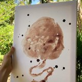
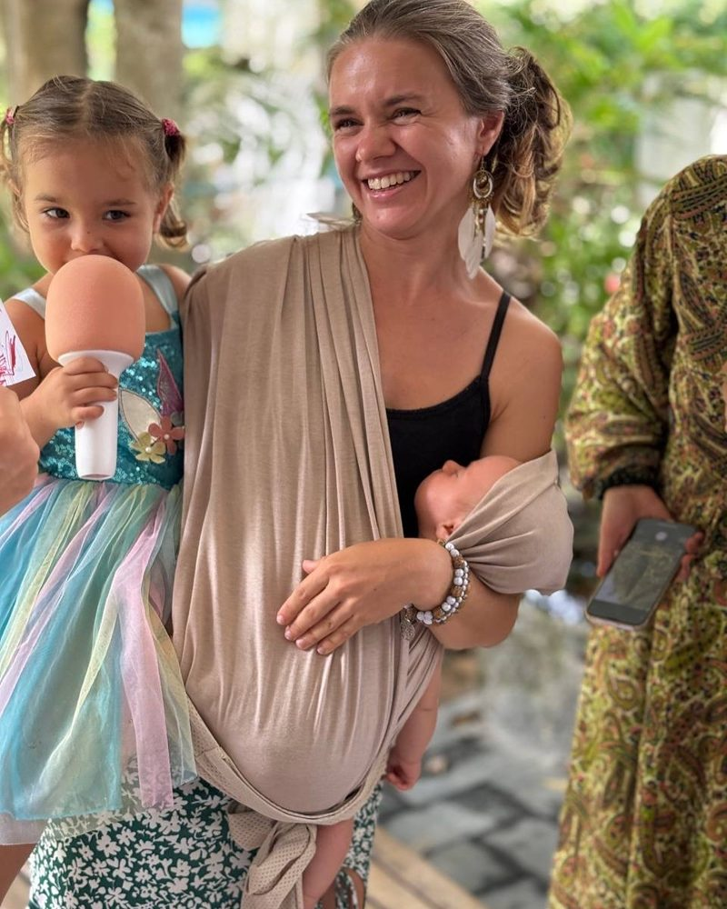

Placenta encapsulation
Natural support after birth — made from your own placenta, just for you.
I take only 3 mamas per month — please book early, ideally by 36 weeks.
Natural support after birth — made from your own placenta, just for you.
I take only 3 mamas per month — please book early, ideally by 36 weeks.

I gently dry your placenta, grind it into powder and place it into capsules. It becomes a natural supplement made from your own body. One placenta usually gives about 150 capsules. Many mothers take them in the first 40 days to support recovery, energy, milk supply and mood.
I make a 100 ml bottle of tincture from your placenta, with an unlimited shelf life.
For you: traditionally taken later on — to restore energy, support hormonal balance and get through stress more easily, during illness, before your period, and in menopause or other transitions.
For your mother & daughter: your biological mother can use it in menopause, and your biological daughter when her periods begin.


A unique keepsake: an imprint of your placenta, the “tree of life”, on canvas, which I make before encapsulation. Hang it at home as a reminder of your birth. The canvas can be taken off its frame and rolled up, so it travels easily.
You book your spot and we plan everything together.
I collect your placenta, usually on day 1.
I gently dry and encapsulate it.
Your capsules are ready.
I prepare your placenta in a safe and loving environment, with deep respect for the miracle you have experienced.
Medical gown, sterile gloves and mask, a fully sterilised kitchen, and equipment used only for placenta work. I work with one placenta at a time — yours stays yours from start to finish.
No problem! After birth, keep the placenta in the fridge. Your partner or helper packs it into a thermos with ice and sends it to me on the ferry. I lend you the thermos and send your capsules back.



A 2 000 THB prepayment secures your spot (it is non-refundable). The rest is paid when you receive your capsules.

I'm Kate, a mother of three, living on Koh Phangan for 5 years. I support women in birth and postpartum recovery, give postpartum massage and teach kundalini yoga. I learned placenta encapsulation from Victoria Vidra, an experienced doula and placenta specialist, and now I prepare capsules for mamas on Koh Phangan and Koh Samui to support them in the first weeks after birth.

While you’re still pregnant, ideally by 36 weeks. That way we can talk everything through calmly, and after birth you’ll know how to keep your placenta.
Without a fridge — up to 24 hours; in the fridge — up to 48. If more than a couple of days will pass before encapsulation, freeze the placenta in two bags: it keeps in the freezer for up to 6 months. Just don’t freeze it in the hospital basin or in a pad.
Yes. I’ll choose the right way to prepare it for your situation.
If the placenta has been in the fridge for more than a week or smells unpleasant. It isn’t safe to take, and I’ll tell you so honestly.
Usually 150–200, sometimes more — it depends on the size of the placenta and the capsules.
I bring the capsules myself, ask how you’re feeling and suggest how many to take. Usually they’re taken every day for the first 4 weeks, slowly cutting down. Don’t stop suddenly. Every box comes with a short guide.
For the first month — on a shelf, in a dark jar with silica gel. After that — in the freezer, for up to 2 years. The rest will come in handy for stress, illness, to support your milk or when you finish breastfeeding. Just don’t keep them in the fridge: moisture makes them stick together and they can go mouldy.
Yes. I come with my own equipment, do the first part of the work in your kitchen, then dry and fill the capsules at my place. A home visit may cost a little differently.
Placenta remedies are a traditional practice, not a medical treatment, and do not replace advice from your doctor.